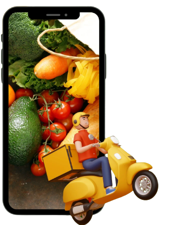

Get Fresh Groceries
on the go....

TNK Groceries is an online grocery retailer that provides a large selection of fresh fruit, pantry essentials, gourmet treats, and household necessities. Delivering the supermarket right to your home, the business is dedicated to quality, affordability, and convenience. A smooth shopping experience with individualised recommendations and simple navigation is offered by the user-friendly website and mobile app. TNK Groceries is a trustworthy and cost-effective place to do grocery shopping because of its doorstep delivery service, flexible time slots, and low costs.
TNK Groceries is a dependable online grocery partner that offers a large variety of fresh produce, pantry basics, and household necessities. They guarantee a flawless buying experience with a user-friendly website and affordable costs. They place a high priority on comfort and pleasure, offering quick delivery alternatives and top-notch customer support. Choose TNK Groceries to satisfy your grocery demands for a trustworthy, reasonable, and practical solution, and become a part of our expanding client base.